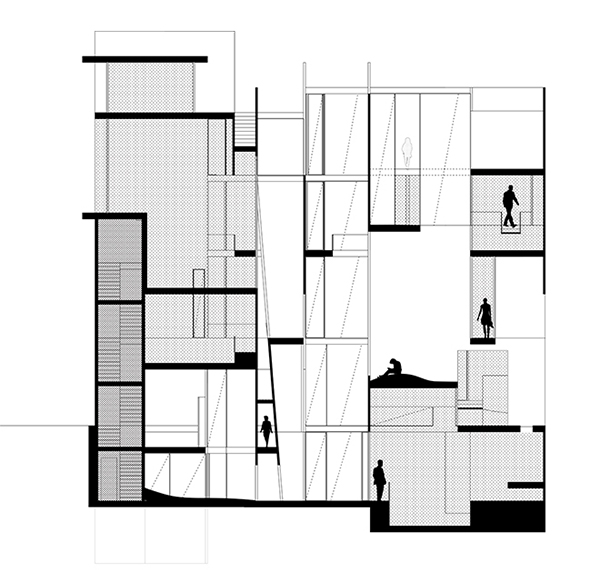
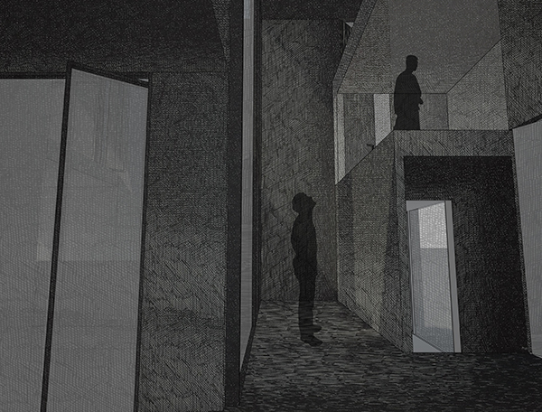
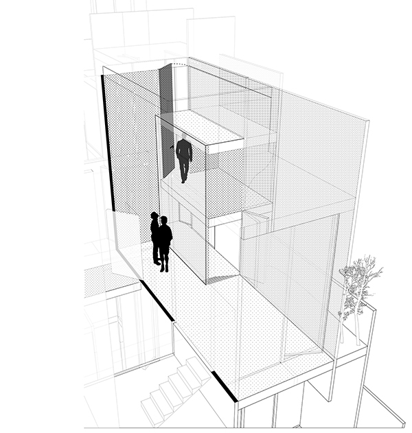
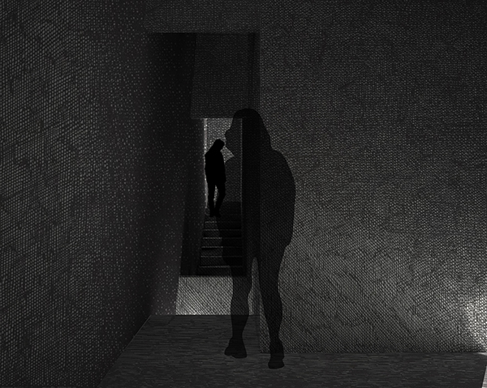
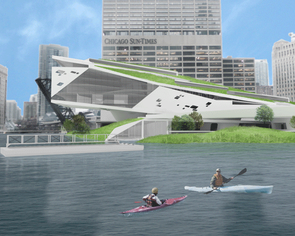
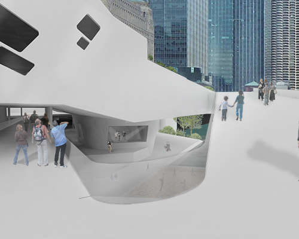
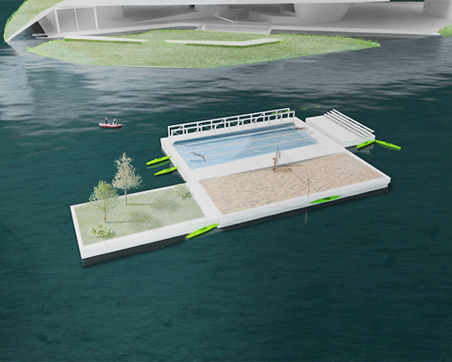
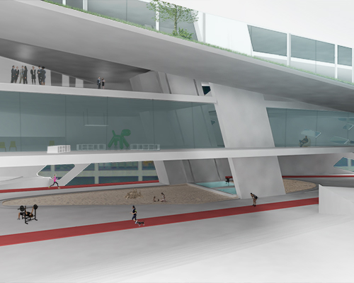

Spencer
Living is an individual endeavor. It composes itself from a collection of moments. Moments stripped from consciousness. Moments of internal soliloquy. They formulate and ripen in the breadth of the everyday; they linger or they fade. Their meanings can be provocative or dismal. Environments are where these potentially rich occurrences seed. Environments within, without architecture, maintain an affective quality upon moments. The everyday is posited as revealing and poignant.
on cinema. [a scripted reality]
The lens and the microphone are the tools of the film-maker. They witness the scene in our absence and through such engender a specific atmosphere, meaning, and expression. Film holds the ability to infiltrate our minds and senses, ultimately inducing our empathy for the moments and people it portrays. The true capturer of moments.
on literature. [a true fiction]
Prose is the only tool of the writer. Prose spews tone, character, place, drama, nuance, depth. Through its methods it poses to move us, to infatuate us in its meaning, to provoke its dissection.
on architecture. [an everyday reality]
Architecture exists in the everyday world, not the cinematic world, not the literary one. The everyday is unscripted, present, and ran- dom. If the lens is the media of film, prose of literature, then architecture is suitably a purveyor of everyday life. Space is the lens through which daily lives are led. This architectural lens (space) can deem moments increasingly provocative and illustrative.
These disciplines have woven themselves into the crux of this thesis; a thesis concerned definitively with everyday life and the moments it holds. Certain moments, real or fictitious, have the ability to move us, to issue profound memories, to be unequivocally meaningful. These moments, this living, are what develop individual selves; the lives we lead. Whether routine or spontaneous, mundane or sensational, all moments are susceptible to a hollow ignorance or a deep interest and care. Architecture maintains a slew of potentials for a heightened interest, meaning, and consciousness of everyday moments. Through various techniques this thesis is directed to produce exceedingly profound and meaningful moments within the everyday; to induce a sort of consciousness of its subtleties and dramas.
At 325 Grand. Lower East Side. NY. NY, a new building proposal aims to engender these evocations, these new consciousnesses; to make everyday life more palpable.




Allie Freund
Thesis Title
While architecture’s spatial expertise is typically used to rigidly define and segregate the uses and experiences of spaces, it is also possible that architecture could develop new techniques that would allow it to become an instigator and an interrupter of usual.
We can look to the act and necessity of play as an interruption to the current state of mind, freeing the individual and providing new realities. Understanding playing as a state of openness, pliable and reflective of peoples needs, the spaces of this thesis will demonstrate new architectural techniques that will allow for the creation and overlap of spaces that can inspire or initiate these states of mind, detaching the user from the everyday and liberating their desires and impulses. The architecture will monumentalize these actions and remain empathetic to a ludic environment that can reimagine how one considers, responds, and experiences a space.
WHAT
EVERYTHING is an exhibition featuring the undergraduate thesis work of Jackson Studio. The projects each have a unique focus, but all are united in their ambition to re-frame the physical world as a place of augmented experience, in accord with aspects of contemporary culture that the architectural discipline has so far failed to adequately address.
Each thesis is therefore framed as a challenge to existing practices, and an argument for and demonstration of a new approach to architecture.